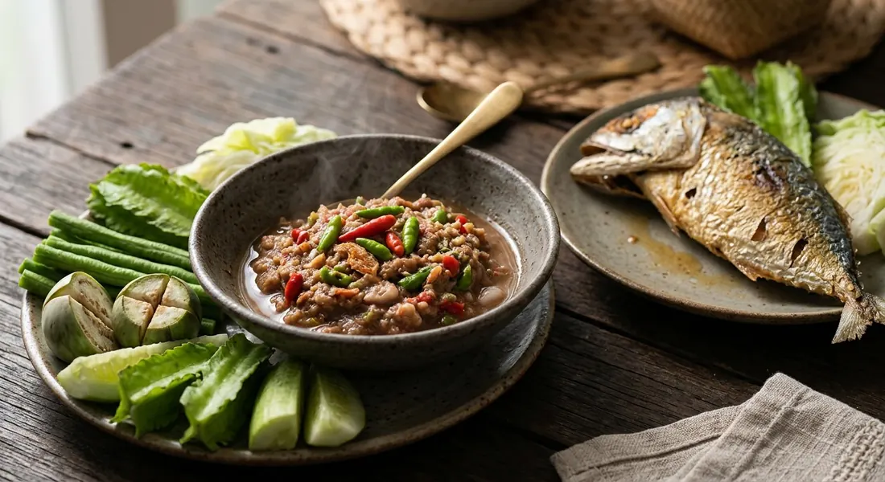

Chillies, garlic and shrimp paste pounded with palm sugar, lime and fish sauce — the dip that anchors the Thai table, with fried mackerel and vegetables around it.

น้ำพริกกะปิ takes its name from kapi, the fermented shrimp paste that is its base and its whole reason for existing. Kapook's pitch is the standard one: the dip that has sat on the Thai table forever — complete in every taste, hot, sour, salty and sweet — eaten with raw or blanched vegetables, fried mackerel, or a cha-om omelette. The recipe barely exists: pound chillies and garlic, add kapi, season, done. Everything else is argument.
The first argument is the kapi itself. The traditional school roasts the paste before it goes in: wrapped in banana leaf and grilled over a low fire until fragrant — Kapook accepts a dry pan, oven or air fryer, and even a quick stir-fry — which rounds out the raw edge. TrueID's ancient version does exactly this and adds the old trick of squeezing orange juice into the dip to keep the colour bright. But the weekday school pounds the kapi straight from the tub: Wongnai's two quick versions don't touch the grill at all, and neither does the tamarind version.
Then there's what it's eaten with, and what it becomes. Kapook lists the classic set — fried mackerel, cha-om omelette, battered fried aubergine, seasonal vegetables — and the variations: the same dip with young green mango, with calamansi juice in place of lime, with toasted dried prawns on top, or with tamarind concentrate folded in. The charm, Kapook insists, is that every house has its own formula and its own hand — the dip that never tastes the same twice.
| Thai | English | Amount |
|---|---|---|
| พริกขี้หนูเม็ดเล็ก | Bird's eye chillies, small | 30 g |
| พริกจินดาแดง | Red jinda chillies | 20 g |
| กระเทียมกลีบเล็ก | Thai garlic, small cloves | 100 g |
| กุ้งแห้ง | Dried shrimp | 20 g |
| กะปิ | Shrimp paste | 100 g |
| น้ำตาลปี๊บ | Palm sugar | 30 g |
| น้ำมะนาว | Lime juice | 165 g |
| น้ำเปล่า | Water | 100 g |
| น้ำปลา | Fish sauce | to season |
| มะเขือพวง | Pea aubergines | to taste |
| ผงชูรส | MSG | optional |
The ancient version (TrueID): 50 g Thai garlic, 30 g red jinda chillies, 10 g bird's eye chillies, 1–2 ma-uek, 3½ tbsp shrimp paste, 30 g pea aubergines, 4 tbsp lime juice, 150 ml orange juice or water, 1½ tbsp fish sauce, 1 tbsp palm sugar. The quick bowl (Wongnai): 3 bird's eye chillies, 2 red chillies, 3 garlic cloves, 1 tbsp shrimp paste, 3 tbsp lime juice, 1 tbsp fish sauce, 2 tbsp sugar — no water, no dried shrimp. The tamarind version (Wongnai): 2 tbsp tamarind concentrate, 2 tbsp shrimp paste, 2 tbsp palm sugar, 30 g bird's eye chillies, 30 g garlic, 1 tbsp dried shrimp, 2 tbsp fish sauce, 2 tbsp lime juice, 40 g pea aubergines. This is a big family batch — it halves cleanly, and the thick versions keep for days.
Raw kapi or grilled kapi. Kapook (both recipes) and TrueID wrap the paste in banana leaf and grill it first; Wongnai's quick version offers the grill only as a tip; the thick and tamarind versions pound it straight from the tub. The grill tames the raw edge; the tub is the weekday shortcut.
How much lime. 165 g in Kapook's home batch, 4 tbsp (TrueID), 3 tbsp (the thick version), 2 tbsp (tamarind), 1 tbsp (the quick version) — the same paste supports all five. The sour-salty-sweet balance is the cook's signature.
Dried shrimp or not. Kapook and the tamarind version pound in dried shrimp; the two quick Wongnai bowls and TrueID's ancient version skip it entirely.
The chilli mix. Bird's eye plus red jinda (Kapook, TrueID); bird's eye plus red spur (the thick version); bird's eye alone (the quick and tamarind versions). Kapook notes that bird's eye alone is fine if you don't want much heat.
Water, none, or juice. The thick version adds nothing — it keeps for days and gets microwaved warm before the table. The home batch takes 100 g of water. TrueID's ancient version uses orange juice — the trick that keeps the colour bright.
The sweetener. Palm sugar everywhere except the thick version, which uses white sugar. Both work; the palm sugar gives the darker, rounder taste.
The wild extras. Only TrueID adds ma-uek, the fuzzy wild aubergine, sliced into rounds. Kapook offers kaffir lime or calamansi juice when limes are expensive. The tamarind version folds in tamarind concentrate as a second sour layer.
This recipe is translated from the following Thai-language sources. Where they disagree, we've said so.
1. Kapook — "รวมสูตรน้ำพริกกะปิ 2 สูตรเด็ด ตำเองง่าย ๆ หอมกะปิ รสจัดจ้าน กินคู่เครื่องเคียงอะไรก็อร่อย" (the recipe used here, adapted from Pantip member บ่งบ๊ง's post) — cooking.kapook.com
2. TrueID Food — "วิธีทำ น้ำพริกกะปิ สูตรโบราณ พร้อมเทคนิค ตำน้ำพริกให้สีสวย" (the ancient version with the orange-juice trick, from the กินได้อร่อยด้วย channel) — food.trueid.net
3. Wongnai — "วิธีทำ 'น้ำพริกกะปิ' เมนูน้ำพริกคู่บ้านคนไทย ได้ลองแล้วจะติดใจ" (the thick no-water version, by ปูนแดง) — wongnai.com
4. Wongnai — "วิธีทำ 'น้ำพริกกะปิ' เมนูน้ำพริกคู่บ้านรสเด็ด ทำง่ายภายใน 10 นาที" (the quick version, by จิ๋วหิวโซ) — wongnai.com
5. Wongnai — "วิธีทำ 'น้ำพริกกะปิมะขาม' น้ำพริกรสเด็ดประจำบ้าน กินกับอะไรก็ลงตัว" (the tamarind version, by กิน&GO) — wongnai.com